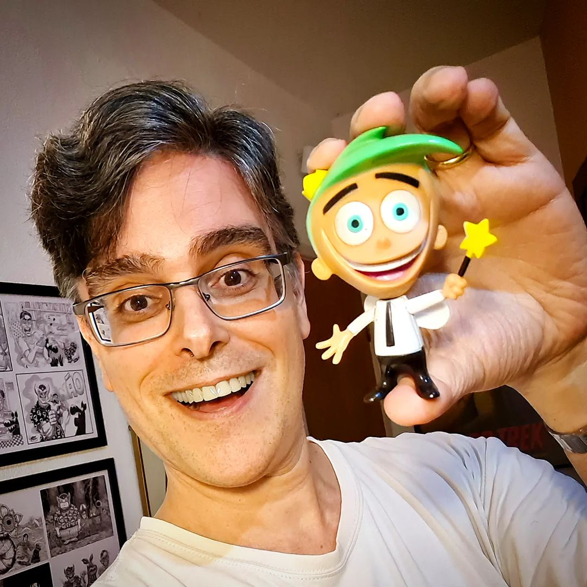
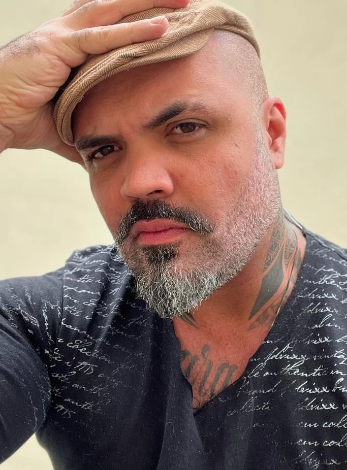
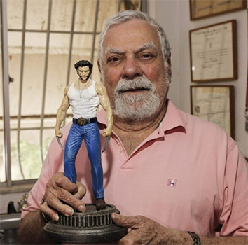

Dubladores Famosos
Conheça alguns dos dubladores mais icônicos do Brasil e suas principais contribuições para o entretenimento:
- Wendel Bezerra – Responsável pelas vozes de Goku (Dragon Ball) e Bob Esponja. Também atua como diretor de dublagem.
- Guilherme Briggs – Conhecido por dublar Superman, Cosmo (Os Padrinhos Mágicos), Buzz Lightyear e Optimus Prime. É também artista plástico e diretor.
- Francisco Júnior – Dublador do Sukuna (Jujutsu kaisen), Grimmjow (Bleach) e diversos personagens icônico.
- Márcio Seixas – Famoso por dar voz ao Batman (Bruce Wayne) em diversas animações e filmes.
- Isaac Bardavid – Marcou gerações ao dublar o personagem Wolverine, interpretado por Hugh Jackman.
Galeria de Dubladores

Wendel Bezerra – Voz do Goku e Bob Esponja.

Guilherme Briggs – Voz do Superman, Buzz Lightyear, Optimus Prime.

Francisco Júnior – Voz do Sukuna.
Márcio Seixas – Voz do Batman.

Isaac Bardavid – Voz do Wolverine.